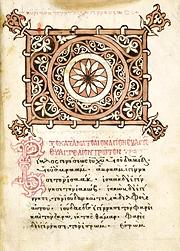

Overview
Judaism is totally incompatible with any form of Paganism, and Christianity is not much more compatible. Some folks claim to be both Pagan and Christian, but they are probably making serious compromises - cherry picking from both sides.
To carry Jesus into Paganism, Christianity, and Judaism, must be stripped away from him. That is easier than you might think, because the teachings of Jesus are incompatible with Christianity. There are still issues between the teachings of Jesus and Paganism, which we explore in the paragraphs below.
Paganism, for this discussion, includes the many forms that are today called "Neo-Paganism". Even the most hard core Pagan reconstructionists admit adaptions must be made, because our times are very different from ancient Pagan times. The only uninterrupted Pagan culture is in Ossetia, in southern Russia, though some traditions were preserved in Abkhazia. The descriptions here of Pagan attitudes are not without exception, but predominate in the Neo-Pagan movement.
For a better understanding of Paganism, see our article A Pagan Reality - In Our Time. I also strongly recommend the book Godless Paganism - voices of Non-Theistic Pagans. Most of the concepts expressed in the book are also valid for theistic Pagans. It is available from Lulu and Amazon.
Many Pagans and Witches of today are refugees from the Christian churches, many from the extreme "fire and brimstone" Evangelical churches. They have come with strong prejudice against Jesus, whom they associate with the churches that claim to represent him. The churches lie, they do not represent Jesus, they exploit him.
Many Evangelical churches recently (2016) preached from their pulpits, in total violation of their tax-free status, that their flock MUST vote for Donald Trump, because "God has sent Donald Trump to be King of America". Donald Trump EXEMPLIFIES nearly everything Jesus taught AGAINST. There is simply no relationship between these churches and the teachings of Jesus, and not a lot among many other "Christian" churches.
Christianity was spread by conquest and mob violence - "Conversion by the sword" was not invented by the Muslims. Christianity was promoted by emperors and kings who loved the idea of one all-powerful God, who awarded them unquestionable powers by "Divine Right". Millions were slaughtered by the kings and the churches. It is difficult to convince many Pagans that Jesus was not a party to these atrocities, all done in his name.
How could Christianity have drifted so far from the teachings of Jesus? Well, it wasn't a drift. Subverting the teachings of Jesus was integral to the very foundation of the Christian churches. It was placed into their DNA by the man who founded them. For details, see our page Jesus Betrayed.
Christian hypocrisy is a major reason mainstream Protestantism has been plunging in the polls, with a corresponding rise in "spiritual but not religious". Paganism is also increasing, and it is estimated there are now more Pagans than Presbyterians. The Evangelical churches have held fairly steady, but are expected to plunge in the next few years. The average membership is very advanced in age, and the young are leaving.
While it is easy to see the disconnect between Christianity and and the teachings of Jesus, there is still incompatibility between Jesus and modern Paganism. This is explained in detail in the paragraphs below. A Christo-Pagan must reconcile these issues.
Historical Jesus
The search for the historical Jesus is over. There is no shred of hard evidence Jesus was a living person. Various places in his life have been appointed without actual evidence. Origen, perhaps the greatest theologian of early Christianity, during his exile in the Holy Land (around 233 CE), set out to identify all the places in the story of Jesus. He admitted he could find nothing. None of the many recent attempts to present the "historical Jesus" have been at all convincing - there are just too few bits and pieces to construct a person out of. Nonetheless, there is consensus that he was a real person, so we go along with that here.
For the nature of Jesus, we must depend on what was written as close to his time as is available. Most is from the four canonical gospels, but also from other Christian sources, some of which were heavily suppressed by the church. There are no non-Christian references to Jesus by name until about 80 years after his birth.
The canonical Gospels were written between 66 and 110 CE, and scholars do not believe any of them were written by eye witnesses to Jesus' life. There may have been documents available to the Gospel writers that were from eye witnesses, but none of them exist today. There are a few fragments of other documents from this period, but nearly all other Christian sources are later than 110 CE, many are hundreds of years later. For much more on the writing of the Gospels, see our Appendix, The Gospels.
Despite centuries of effort by Christian theologians to "de-Judafy"
Jesus, he was totally Jewish, lived in the Jewish communities, and was
only interested in preaching to Jews. This has been strongly supported
by recent scholarship and archaeology. When he sent his disciples out
to teach and to heal, he specifically told them not to minister to
the Gentiles or the Samaritans (an offshoot of Judaism) [Mat X 5].
Teaching to Gentiles was initiated by Peter, and Paul eventually
ministered to Gentiles almost exclusively This did not sit well with
some others in the movement.
God and the Old Testament
The angry, vengeful, jealous God of the Jewish scriptures, made in the image of kings, is totally unacceptable to Paganism. Many feel the Old Testament itself has little place in Christianity. Its adoption by the churches was critical to justify an authoritarian church, which was not directly supported by the teachings of Jesus.
Jesus' concept of God may have been a little different from the Old Testament, but the Gospels provide little evidence of that. He seems to presume the image of God is well established in the community he taught to, and his words do imply love, but also a dash of vengefulness.
References to passages in the Old Testament are common in the gospels. There were no other references that would be familiar to the people early Christians were preaching to, and the early Christians were very strongly trying to maintain their Jewish identity. This became more difficult when Jews accepting Jesus as the Messiah were banned from the synagogues, and the movement became increasingly dominated by Gentiles.
Even with these references, there is no reason for wholesale adoption of the Old Testament into Christianity except that it provided for authoritarian kings and church hierarchies. These authoritarian structures were not supported by the teachings of Jesus, so had to be derived from some other authority.
One Path to Salvation
Jesus, in the Gospels, makes it quite clear that he stands between you and God, and that only through him can you find salvation. He alone judges your worthiness and speaks to God on your behalf - for salvation or for condemnation. This is made very clear in John V 22-23, which states that the Father does not judge anyone but has given over judgement entirely to the Son, and that all should be honoring the Son just as they honor the Father. Further, anyone who does not honor the Son also does not honor the Father who sent Him.
This is not compatible with Paganism. Paganism strongly holds to personal responsibility, and to direct communication by you with spiritual entities, however you conceive of them. It is your own responsibility to improve yourself. In the end, you will be judged on how well you played the cards life dealt you. As the saying goes, "Karma is a bitch", but Pagans do not believe in eternal torture as a result of this one lifetime.
And, while we're talking about forgiveness - John 3:16 says, "Whosoever believeth in him, may not perish, but may have life everlasting". Problem: Jesus states he requires proof of that belief - the proof being whether you lived in accordance with his teachings. This is something a whole lot who claim to be Christians will have a hard time providing. The "Hell of Fire" is going to be pretty crowded.
Be aware that Jesus said nothing about his crucifixion washing
away your sins, nor do the gospels say that anywhere. That the blood
sacrifice of Jesus was to relieve you of all responsibility for your
sins never made much sense, and was all made up by the apostle Paul,
for his own purposes.
Gender Issues
Paganism, in all its many forms, theist and non-theist alike, is overwhelmingly gender balanced. If there is bias, it is usually to the female side, because so many Pagans are women refugees from the paternalism of the churches. Pagans predominantly follow scientific evidence that gender identity is not a "choice", and most respect all gender identities, including transgender folks. There are exceptions, such as Dianic Wicca, which admits only natural born women, preferably lesbians, and recognize only a goddess.
All this brings a very major disconnect with Christianity and Judaism, but a lesser disconnect with the teachings of Jesus.
Many centuries before Jesus, Judaism gradually suppressed, then completely removed God's wife, forbidding her very name to be spoken. With no female deity to fear, the Jewish hierarchy relegated women to a status somewhere between men and livestock. In those days, women were considered to be failed men, fetuses that had not developed fully before birth.
Most scholars hold that Jesus did not consider women fully equal to men, but Jesus included many women in his circle, especially Mary Magdalene. It is recorded that his apostles strongly protested these inclusions. In the Gospel of Thomas, Jesus tells the complainers that in heaven he will convert these women to men, so they can enjoy the benefits. There is some evidence the very early church treated men and women more or less equally, but with Jesus gone, the leaders of Christianity relegated women to their place as assigned in Judaism.
The apostle Paul, who founded the Christian Churches, despised women, and decreed for them total subjugation under their husbands, and for total silence in the churches. It is interesting to note that by Roman law a woman was never under legal control of her husband. She was legally bound to her father, and when he died she was legally independent.
Paul's paternalistic suppression of women is still strong in the Christianity of our time. Example: one of the greatest influences within the Medieval church was Hildegard von Bengen, yet it took over 830 years and a sneaky Pope to get her canonized as a saint - he used a loophole in ecclesiastic law to do it. Belief is still strong in the church hierarchy that no woman could possibly have accomplished all the things she accomplished without the help of the Devil.
The one exception to suppression of the female was the elevation of Mary, as a tool of deception. To attract Roman converts, the early church constituted Mary in the image of Vesta, Rome's favorite goddess. They dressed her in blue, Vesta's color, and had her ride on a Donkey, Vesta's favorite animal. Casting her in this pseudo-Pagan mode turned out all too successful, as veneration of the Madonna reached Pagan goddess levels, especially in Spain.
One of the major goals of the Protestant Reformation was to get rid of Mary, and she plays an extremely minor roll in Protestantism today. Her role in the Catholic Church has also been greatly diminished.
To bring Jesus into the Pagan fold, all this gender crap has to be discarded. Christo-Pagans must clearly recognize the equality of male and female in deity, or they cannot be respected as Pagans.
For Jesus the man, there is Mary Magdalene. She was not a repentant prostitute - that was made up hundreds of years later as part of the suppression of women. She was a well to do Jewish lady who supported Jesus' ministry with her own resources. A radical synagogue has now been excavated in Magdala where Jesus would probably have been welcome to preach, and where he could have met Mary Magdalene.
For the esoteric aspects of Jesus, there is Sophia. Of Greek
origin, as personification of wisdom, Sophia has long been adopted by
the Gnostic Christian Church as the feminine side of Jesus. Gnostic
theology is very complex, so we won't dive into it here, but a
Christo-Pagan should definitely consider honoring Sofia.
Proselytizing
In his teachings, Jesus promises salvation to those who repent, follow his teachings, and have faith in him. These promises are always backed by threats of eternal torture should you fail to do so. These threats are to be enforced by his father, God, and the dirty work is to be done by the Devil, one of God's creations.
These threats are used by all Christian missionaries in their attempt to make converts, and they are nearly impossible to remove from Christianity, or from Jesus' teachings.
This is alien to Paganism. Pagans are welcoming, and most are very willing to teach about their beliefs, but there is no threat behind it, no coercion to convert. Persons who come to Paganism come of their own free will, often as refugees from Christianity and its constant threats.
The Pagan attitude is that nothing stands between you and the
spiritual, except, perhaps, yourself. The Pagan attitude is that you
will be judged on how well you played the cards life dealt you,
regardless of your religion, if any, or your social status. You are
totally responsible, not some entity you must mindlessly worship as
payment for salvation.
Earth Stewardship
Both Judaism and Christianity hold that God gave man total dominion over the Earth, and the right to exploit it. This is totally incompatible with Paganism. The almost universal Pagan attitude is that we are embedded within the Earth, not ruling over it. Some have defined Paganism as a large collection of diverse Nature religions.
There are entities below us and above us. It is our duty to do our best as stewards of the Earth, caring for it and the living beings on it. For many Pagans, everything, down to tiny grains of sand, has a consciousness of the type appropriate to its nature. Larger structures, such as mountains and seas, have a composite consciousness created from all the smaller consciousnesses they are composed of.
The same holds for human communities, they have a consciousness composed of the consciousnesses of all the individual humans within them.
The same holds for the human body, which is a community of billions of entities, both independent entities and those making up structures that are organs of our bodies. Even our individual cells (eukaryotes) are communities, formed from many once independent entities. They also contain critters that are still semi-independent, mitocondria, which have evolved to play extremely critical rolls in cell function, but maintain their own separate DNA.
Thus, to be a respectable member of the Pagan community, it is essential to chuck the domination theory of the Judeo-Christian tradition, and accept your place as embedded within a universe that you need to take care of.
Slavery
In many places in the gospel Jesus mentions slaves, but seems entirely accepting of slavery. He talks of the duties of a slave to the master, but nowhere preaches against the institution of slavery. Slaves are, of course, among the possessions to be sold so the proceeds can be given to the poor before following Jesus.
It is possible that in the various places where he describes "the least ones" exalted above the powerful, he may includes slaves, but this is not clarified anywhere.
Note that the so called Bible Belt in the United states is roughly the same area as the former Confederate States, all of which declared preservation of slavery to be their reason for secession. Clearly, freeing of the slaves was not due to Christianity, but to the increasing influence of humanism.
For sure, ancient Pagan peoples had slaves, but I know of no
interest in restoring slavery among even the most hard core Pagan
reconstructionists. In contrast, many Christians in the Bible Belt
region are definitely in favor of restoring slavery. Alabama Senate
candidate Roy Moore (2017), "The last time America was great was
during slavery".
Animal Sacrifice
It was required of Jews in those days to offer animal sacrifices as burnt offerings to God. These ranged from sparrows for the poor up to a bull for the very well to do. Jesus did not object to this, and gives some instruction as to your state of mind as you bring a gift to the altar of whole burnt-offerings [Mat V 23]. What Jesus objected to was merchants offering sacrificial animals for sale in the temple courtyard.
Jewish law made it illegal to hold sacrifices, animal or other, except at the temple in Jerusalem, so when the temple was destroyed by the Romans, animal sacrifice and burnt offerings no longer were performed. There was a short lived revival during the Bar Kokhba revolt. Rabbinic Judaism requires gifts to charity rather than sacrifices.
Some Christian communities still do offer animal sacrifices, but they are done "Greek style" with the animal consumed in a feast or given to charity rather than being burned. Islam sacrifices many millions of animals a year, but again, they are eaten in feasts and given to charity.
It is true that in ancient times Pagans made offerings in pretty
much the same way, though only the inedible parts were burned, the
rest used in feasting or given to the poor. To the best of my knowledge
no Neo-Pagans have come out in favor of animal sacrifice. Many Pagans
today are vegetarians, or even vegans, as part of stewardship of the
Earth.
Photo by Keven Law distributed under license
Creative Commons
Attribution Share-Alike v2.0 Generic.
The Kingdom of God & The Second Coming
Throughout the Gospels, Jesus declares the Kingdom of God is imminent. It did not come, making Jesus the first failed Rapture prophet. Paul preached to his followers that they should not get married and start families, but should concentrate on their religion, because the Kingdom of God was imminent, making him the second failed Rapture prophet.
Eventually, the faithful realized the delivery date for the Kingdom of God had been missed, by a wide margin, and Jesus did not appear on time either. So, they got busy starting families and building households so Christianity would not just fade away while they waited for these things to come to pass. Still waiting, despite no shortage of Rapture prophets and prophecy.
Pagans simply do not believe in the Rapture. We are part of the
continuing Earth, and it is our responsibility to take care of it.
Many Pagans do believe in a life after death, but nothing like our
physical life here. It doesn't involve being handed a harp and halo,
having wings attached, and spending all of eternity singing praises
to God - or toasting eternally in the "Hell of Fire" either.
How can This Be Done?
How can an aspiring Christo-Pagan reconcile all these factors explained above? It seems far fetched, but with a good understanding of Paganism and Jesus, and a bit of determination, you may be able to work it out. One thing you have going for you is the breadth, depth, and tolerance of Paganism. Those who wished to create a "Big Tent of Paganism" have been rethinking - Paganism has just become too broad for any single tent to hold.
You won't be working within established rules for this, there are none. By far, the majority of Pagans are solo practitioners, many of them very eclectic in their views. There are polytheistic Pagans, and non-theistic Pagans and all other kinds, and it's considered very bad form for any variety to call another wrong. We do not believe there is one right path to truth, there are many paths.
Now you have work to do. The first step is to declare yourself free from the Church. You can join the rapidly expanding ranks of "Spiritual but Not Religious" as an entry point, or directly to the teachings of Jesus independent from the church. You should probably do this with a ritual, to help you break free, and stay free. We have suggestions for such a ritual on our page Banishing the Church.
The next step is to declare yourself as living within the world (actually universe) as a Steward of the Earth , and truly believing that is so. This is a critical step into Paganism, as also is fully recognizing Gender Balance in deity. A formal ceremony may help. The Banishing ritual contains suggestions for this, or you can compose some other event.
Now, you need to set up your altar and start forming your concept of Jesus. Your concept may not fully follow the gospels, or any other source - Paganism is intensely personal. It should, though, be strongly based on what is known of the character of Jesus, not just pie in the sky, because it is Jesus you want to talk to.
The altar serves as a portal for communication with the deity, in your case, Jesus. It can be extremely simple or quite elaborate, that's up to you - but its central feature must represent a connection to the deity that is meaningful to you. The example alter in the photo above includes the basic Pagan elements: Earth (the ceramic disk), Air (the incense), Fire (the candles), and Water (the bowl of flowers). For more on the elements see The Elemental Realms.
You can start forming your concept of Jesus with our section What did Jesus Actually Teach? as an entry point, and go on to The Gospels. The Gospels are all we have to go by, but they are written by men for their own purposes. They are not the infallible words of Jesus himself. You have a little wiggle room here - and you are going to have to make adjustments. The world we live in is a lot different from the world Jesus lived in. Do hold to the teachings as closely as you can, realizing they were not designed to be comfortable.
Caution: do not accept anything from the teachings of Paul. His teachings are generally quite opposite those of Jesus. He is the heretic responsible for the malfeasance of the churches and Christians in general. For details see our page Jesus Betrayed. Fortunately, the Gospels are free of the teachings of Paul, but the Epistles of Paul are loaded with it, constituting about a third of the entire New Testament.
With these things accomplished, or at least well within work, you are ready to establish a daily ritual. Ritual and the altar are what separates Paganism from "Spiritual but not Religious". The daily ritual can be no more than a few meaningful words, or more complex. It is good to have a series of rituals from very simple to elaborate, but you should start simple and work up.
A simple ritual should be performed at the altar every day, with more elaborate rituals for important commemorations. Again, the most important thing as that these rituals are meaningful to you - you do not have to follow established patterns, unless you want to.
The altar establishes a portal for communication with the deity. The ritual establishes a mood to enhance your communication with the deity, and to focus your day and your purpose. Meditation at the altar is also a very powerful tool and highly recommended. Feel free to perform ceremonies at the altar. You can also feel free to involve others in this practice if it does not distract you from your purpose.
Incidentally, Sacred Source has a very good devotional statuette of Jesus in their Gnostic section, if you desire such, and also the statuette of Sofia pictured in the Gender section.
Appendix
The Gospels
The main references we have to Jesus' life are the four canonical gospels, consisting of the three synoptic gospels (Mark, Luke, Matthew), and the gospel of John. There were many other gospels, but most exist only as short references or tattered fragments. The most important are probably the Gospel of the Hebrews, probably in several version and written in Aramaic or Hebrew. These no longer exist, the gospels we have were written in Greek. Discovered in Egypt in 1886 is a large fragment of the gospel of Peter, describe by Origen and others as in use by the Hebrews. When it was composed is still a matter of contention.
In preparing this article, I used Kenneth S. Wuest's 1961 translation from the original Koin Greek, which is largely derived from the Nestle-Aland Novum Testamentum Graece - probably NA24. The current version is NA28 (2013). This source includes a lot of content unavailable in 1611 when the King James version was published, and is free of the King James instruction to select and word the translation to match the doctrines of the Church of England. It also includes many important variants for comparison by scholars.
The Wuest translation preserves the order of Greek words to the extent possible, and uses as many English words as are necessary to convey the full meaning of the Greek words, which may not translate well to a single English word. The arrangement and numbering system are designed to maximize readability and comprehension, but things can still be looked up by chapter and verse if you need to. I definitely recommend this New Testament.
The actual authors of the Gospels are unknown, but quite unlikely to be the apostles who's names are attached to them. For instance, the apostle John was an uneducated fisherman, but the Gospel of John is written in quite erudite Greek. On the other hand, early Christianity has more Johns than a house of ill repute, so there's been a lot of unresolved historical confusion.
In earlier times, Matthew was considered the first gospel written, and the most important. Most modern scholars hold the order to be Mark first, Luke and Matthew about the same time, and John last. A common opinion was that they must all have been pretty much finalized by CE 70, as there is no mention of the destruction of the Jerusalem temple, despite Jesus' prophecy in the gospels. This is unlikely - mention of the destruction was an extremely sensitive issue at the time, and may have been deliberately avoided to distance Jesus from the event. Also, the rather low key prophecy may have been slipped into the gospels after the destruction.
Reading the Gospels is rather tedious, because so much of it just
accounts for Jesus going from town to town miraculously curing people.
Since, at the time, so many human conditions were blamed on demons,
around half of Jesus' cures are performed by chasing out demons. The
texts seem to imply that people could see the exiting demons, which
makes weasel wording around this difficult. These can all be discounted
as myths, and similarly for the other miraculous cures. The crowds around
Jesus were probably far smaller than stated in the gospels. On the other
hand, that Jesus did a lot of teaching during his travels is not so
easy to discount.
Gospel of Mark
This gospel was a major source document for the gospels of Luke and Matthew. It starts with Jesus' baptism by John the Baptizer, and ends with the empty tomb. It includes nothing of Jesus' early life nor any appearance after the tomb is found empty. Due to this, other endings have been written for it by other people, but are not official. It is thought Mark was composed between CE 66 and 70, by reference to several earlier documents which are unknown today.
There may also be a "Secret Mark". Though the evidence has been
improved, it is still highly controversial. Only two quotations alleged
to be from it exist, but both enhance understanding of deficient passages
in the known Mark. Unless more is found, its existence will remain
uncertain, and it will be unknown if it was an enhanced version of the
known Mark, or if it was an original from which the known Mark was
redacted.
Q Source
This document has not been found, in whole or even fragments, but is presumed by most biblical scholars to have been a collection of sayings and teachings. A large hunk of both Luke and Matthew contain essentially the same material, often in the same order, and even in the same words. This material is presumed to have come from Q.
Gospel of Matthew
 Matthew is considered the second of the canonical gospels to be written, but almost simultaneous with Luke. Neither refers to the other. Most researchers date it between 80 and 90 CE, but some 70 to 110 CE. It was not written by the apostle Matthew, but probably by a converted Jew quite familiar with scriptures. He wrote in a well polished "synagogue Greek".
Matthew contains most of what is in Mark, some materials of unknown origin unique to Matthew (the M Source), and a good chunk from the hypothetical Q source. Like Luke, but unlike Mark, Matthew includes the nativity and other events in the life of Jesus up to baptism by John, where Mark begins. It also includes events subsequent to finding the empty tomb. It is quite a bit longer than Mark and somewhat shorter than Luke.
Matthew is thought to have been written in Israel or Syria for a
Jewish audience, presenting Jesus as much as possible filling the
expectations for the prophecy of the Messiah. He also emphasizes
Jesus' descent from David for the same purpose.
Gospel of Luke & Acts of the Apostles
Luke is considered the third of the canonical gospels to be written, but almost simultaneous with Matthew. The two do not refer to each other. Some date Luke and Acts between 80 and 90 CE, but others 90 to 110 CE. It was not written by the Luke who accompanied Paul. The author apparently did not have access to the letters of Paul and his theology varies significantly from that of Paul.
Luke addressed his Gospel and Acts to Theophilus, but that person cannot be known. Theophilus was a common name, meaning "beloved of God", but also a title of the same meaning, and the works may have been addressed to a group of people using that honorific. This is all speculation, so the address cannot be used to date the Gospel.
Luke's two books are thought by scholars to be targeted to the Sadducees, the Jewish upper crust and keepers of the temple. The Sadducees believed only in the written law of the Torah, and did not believe in resurrection. They disappeared some years after destruction of the temple in 70 CE.
Luke contains most of what is in Mark, some materials of unknown origin unique to Luke (the L Source), and a good chunk from the hypothetical Q source. Unlike Mark, Luke includes the nativity and other events in the life of Jesus up to baptism by John, where Mark begins. It also includes events subsequent to finding the empty tomb. It is quite a bit longer than Mark and somewhat longer than Matthew.
No two ancient versions of Luke, whole or fragmented, are in complete agreement. Luke was still being actively revised well into the second century, with two major versions, the Western and the Alexandrian. The Western is considered the most deliberately revised in its meaning.
Acts of the Apostles
was written by the author of the Gospel of Luke, probably between 80 and 90 CE. It is the story of the Christian Church from the ascension of Jesus until Paul's imprisonment in Rome. It is thought Paul was executed in Rome a little before 68 CE. It is clear the writer did not know Paul personally, nor did he have access to Paul's letters, because when discussing Paul, in a couple of places he has Paul urging charity and good works. Paul preached that only faith is important, and that charity and good works were of no value towards salvation.Gospel of John
John is considered the last of the canonical gospels to be written. Most researchers hold it to be written between 90 and 110 CE. Until near the end of the 20th century, John was thought completely independent from the three synoptic gospels, but modern scholarship holds the writer was familiar with Mark and Luke, but felt comfortable with re-writing almost completely. As with the other gospels, the identity of that person is unknown.
The writer of John attributed the ultimate source to the "Disciple whom Jesus Loved", but does not claim that person was the writer. This person has not been identified and the term "Disciple whom Jesus Loved" appears in no other document. It could even be a code for a small committee, or simply refer to all of Jesus faithful.
Interestingly, John has Jesus in a Samaritan town preaching to and healing Samaritans, where the other Gospels have him avoiding Samaritans and ordering his disciples to avoid Samaritans. There are other incidents not in the other gospels, including turning water into wine, raising Lazarus, the adulterous woman, etc.
While in the other gospels, Jesus hides that he is the Son of God, in John he preaches it openly and incessantly
John is much more difficult to read than Matthew or Luke. It is
more disjointed, and it is often difficult to know who is being spoken
to. Many times you must think of corresponding events in the other
gospels for context.
Revelations
The Revelations of John was definitely not written by the same person
as the Gospel of John. So far, no one has come up with an interpretation
that satisfies anyone else, so I'm just attributing it to the disjointed
ravings of a deranged mind and ignoring it.
What did Jesus Actually Teach?
All these things are gathered from the gospels, the canonic gospels and some apocrypha. There is no hard evidence they are what Jesus actually said - but it's the best evidence we have.
The teachings listed here are gathered from the gospels, mostly from
a new translation from the Greek (see The
Gospels for details). The list here is nowhere near complete -
you have to read the gospels for completion and context. I use mostly
Matthew here, because the teachings are particularly numerous and clear
in that Gospel.
- John 3:16: King James: "Whosoever believeth in him, may not perish, but may have life everlasting". This is described as "The gospels in a nutshell".
- Judgement Jesus claims to be the sole judge of your worthiness. (John V 22, etc.) The Father does not judge anyone but has given judgement wholly to the Son. All should be honoring the Son just as they honor the Father. Jesus' main criterion is if you have believed in him, and followed his teachings, including having sold all your possessions and given the proceeds to the poor. He is flexible on this, as good works are his main criterion, even where belief is not evident.
- Love thy Neighbor: Jesus states that you must love your brother as you love yourself - and includes your enemies as "your brother", with the commandment to love them as well (Mat 38-48 and others).
- Forgiveness: Jesus requires forgiveness of all offences against you, and places no limit on how many times you should forgive someone for those offences. He states that it is not up to 7 times, but 70 times 7 (Mat XVIII 21-27).
- Praying, etc.: Jesus told that praying, fasting, and other devotions should be done in privacy, even secrecy, seen only by God. This in contrast to those "Actors on the stage of life" who made a great public display of praying, fasting, and being learned in the scriptures, in the synagogues and on the street (Mat VI, VII, etc.).
- Bread: He states that man does not live on bread alone, but also by every word from God's mouth. Bread, however, has a strong place in all the Gospels.
- Wealth: In the gospels Jesus says it is as difficult for a rich man to enter the kingdom of heaven as for a camel to pass through the eye of a needle. In the Greek, it is clear this means the eye of a sewing needle, not the low narrow night time port called "eye of the needle" in a city wall, through which a camel could pass, on its knees.
- Marriage: Jesus taught that a married couple should be "of one flesh". He taught that any re-marriage after divorce was adultery, and to be punished as such. In the Kingdom of God, people do not marry nor give in marriage. All marriages from the temporal world are void in the Kingdom of God.
- Homosexuality: Jesus is totally silent on this and other sexual issues. All of what the churches preach on these issues is from one paragraph of the heretic apostle Paul.
- Abortion: Jesus is totally silent on this issue.
- Sermon on the Mount [new from the Greek - Mat V 1-12]
- Blessed are the destitute and helpless in the realm of the spirit, because theirs is the kingdom of heaven.
- Blessed are those who are mourning, because they shall be encouraged and strengthened by consolation.
- Blessed are those who are meek, because they shall inherit the earth.
- Blessed are those hungering and thirsting for righteousness, because they shall be filled so as to be completely satisfied.
- Blessed are those that are merciful, because they shall be the objects of mercy
- Blessed are those that are pure of heart, because they shall see God.
- Blessed are those who make peace, for they shall be called sons of God.
- Blessed are those who have been persecuted on account of righteousness, because theirs is the kingdom of heaven.
- Blessed are you whenever they shall revile you and persecute you and say pernicious thing against you, telling deliberate falsehoods on account of me.
- Rejoice and exult exceedingly, because your reward is great in heaven - for this is how they persecuted the prophets who came before you.
- The Law (Mat V 13-48, VI 1-8): Sermon on the mount continued. Jesus states with emphasis that you should not suppose he came to destroy the law or the prophets. He came not to destroy but to fulfill prophecy and the law. He than goes through commandments and laws and interprets them far beyond the literal. If you even think about it, or anything close to it, you are subject to "the judgement" and possibly the "Hell of Fire". You'll have to read Matthew yourself, there's way too much detail for me to list here.
- The Lord's Prayer (Mat VI 9-13): [new from the Greek]
"Therefore, as for you, in this manner be praying"
Our Father who is in heaven, let your Name be venerated, let your kingdom come, let your will be done, as in heaven, so on earth. Our bread, that for the coming day, give us today. And forgive us the moral obligations we owe, even as also, as for us, we have forgiven those morally obligated to us. And do not lead us into the place of testing, where a solicitation to do evil would tempt us to sin, but deliver us from the Pernicious One. - Pharisees and Sadusees: (Mat XXIII 1-39 and many other places) Jesus raved mostly against the Pharisees, because they were common and based in the synagogues. The Sadusees were an upper class focused on the temple, and not so commonly seen, though Jesus held them in no greater regard. He called both "Those learned in the scriptures" and "Actors on the stage of life playing the roll of what they are not." It can be presumed this is what Jesus' opinion of "Those learned in the scriptures" of the Christian churches would be, but those did not exist yet. He stated they were snakes, progeny of vipers, and that they could not possibly escape the judgement and Hell. The Sadusees disappeared soon after destruction of the temple, while current synagogue Judaism was founded largely by the Pharisees.
- Dissention: Jesus gets very threatening in Mat X 32, saying he came to sow dissention and set family members against each other in his name.
- Food & Shelter: Jesus tells his faithful not to pay any attention to their bodies, or their need for food, shelter, or clothing. God will take care of that for you, just as he takes care of "the birds of the heavens" (Mat VI 23). This doesn't work too well here in Los Angeles, and would be much less practical in the Frozen North, a regions Jesus was entirely unfamiliar with.
- Children: Jesus said, "Permit the children to come to me, for of such as these is the kingdom of heaven".
- Jews Only: Jesus considered his ministry to be for Jews, and for Jews only (Mat XV 21-28). A Canaanite woman came to him knelt before him, touched her head to the ground and asked him to cast out demons from her daughter. At first he ignored her, then admonished her that his work was only for the children of Israel. She persisted, and Jesus, noting her intense faith in him, finally made an exception and cast the demons out. If Jesus still holds to this, there are precious few in the world today that would qualify for his salvation. There is evidence this qualification is somewhat relaxed in the chapters regarding his crucifixion and beyond.
- Kingdom of God: Given Jesus severe requirements for being saved: Jewish, having total faith in him, disposing of all properties, holding strictly to his expansion of the laws (Mat V 13-48, VI 1-8), and following him, perhaps the Kingdom of God did come, and Jesus did re-appear, but so few qualified for the Rapture it was a very private affair, unnoticed by the rest of the world. If so, don't be expecting the Rapture.
- Faith: Above all, Jesus stresses faith in himself and God. Faith is being absolutely certain of something without evidence or proof. Faith blinds the mind, making it impossible to rationally evaluate anything impinging on that faith. Psychologists have studied this in depth. In contrast, Paganism is not faith, but applying to your life what works for you, your relationship with the spiritual, with others, and with the world - and not fearing to adjust it as needed. It is not at all unusual for a theist Pagan to switch from one "supreme" God/dess to another in different phases of their life. Some call this "serial monotheism", but if each is in turn called "supreme", it is properly called kathenotheism, or, if each one is not held as "supreme" it is "henotheism".
Disclaimer
 I am not a
Christo-Pagan - but I do know a lot about Paganism, and a lot about
early Christianity. I have been a subscriber to Biblical Archaeology
for several decades, and have done many other studies, including reading
the Gospels all the way through, in the best modern translation from the
earliest Greek.
I am not a
Christo-Pagan - but I do know a lot about Paganism, and a lot about
early Christianity. I have been a subscriber to Biblical Archaeology
for several decades, and have done many other studies, including reading
the Gospels all the way through, in the best modern translation from the
earliest Greek.
I am a largely non-theist Pagan, but Goddess Freya has recently entered my household. She seems to be branching out from her Germanic roots - note her very India style pose and Japanese companion (Shinto I presume). Aset and Nebet-het (Isis and Nepthys) also have a presence here.